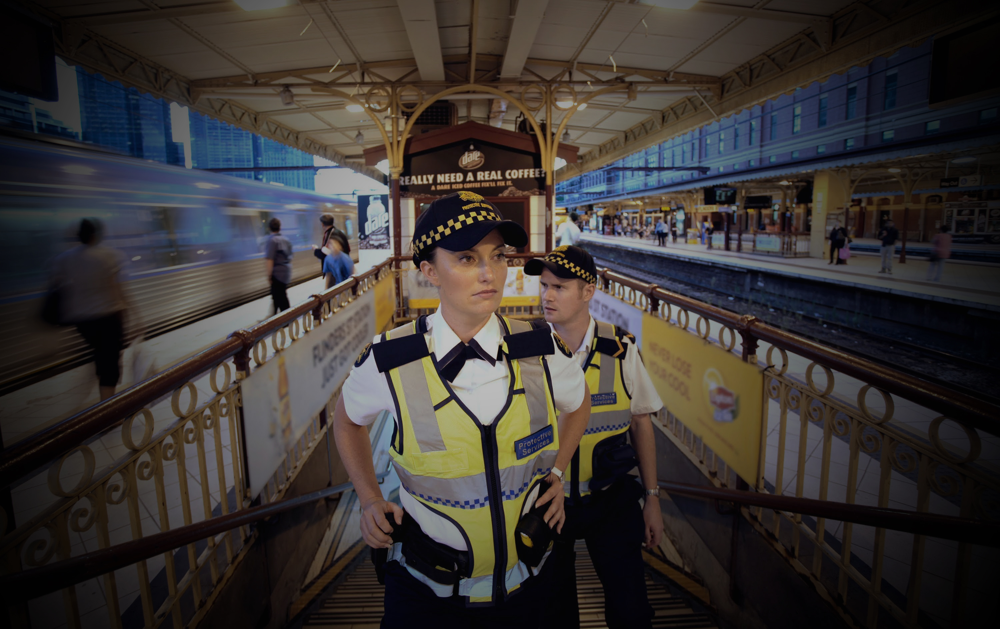

At SecurityPlus, our vision is to make our customers feel at ease. Our focus is on providing value for each client by listening closely to their needs, developing a long-term relationship and then delivering on what we say we are going to do. This is how we make our difference. We give security to people plus a little more.
Our SecurityPlus branding has reached to thousands of organizations inland and overseas. We have over 200,000 employees serving and offering integrated security services to clients in a wide range of organizations. To date, we are involved in over 382 businesses and 124 government agencies and its affiliations.
With over 110 years of service across North America, SecurityPlus is an organization with a rich history. Our success is achieved through the dedication of all security and management personnel to ensure that our levels of security services establishes and maintains a long-standing reputation for quality, professionalism, and integrity.
We are the industry leader in the following services: security guard patrols, protective services, parking management, and armoured transporation.
SecurityPlus' units are available at a moment's notice and we guarantee high quality services for organizations that require the very best for their facilities. Our units are 24/7, equipped, and prepared for any events and or occasions.


As North America's leading security firm, SecurityPlus offers an immense range of exciting and rewarding career opportunities. A career at SecurityPlus is about having the right mentality to securely serve the clients who put their trust in us.
As part of our SecurityPlus team, you will keep clients safe and ensure peace of mind for those we serve. We put clients first and safeguard their business assets and daily operations. You will be a part of a responsible team that takes the protection of our clients seriously and collaborate to reach objectives, share ideas and communicate efficiently.
SecurityPlus encourages professional development and growth. Our security guard training is extensive, providing each team member the knowledge and tools to succeed under any circumstance. We are looking for responsible individuals who reflect the diversity within our agency - who have a passion for security and a desire to make a difference every day.
Security Guard, Parking Management, Protective Services, and Armoured Transport.
We pride ourselves on hiring the best people in the industry. We strongly believe in investing in our people and their future success. As part of SecurityPlus, you will meet rewarding challenges everyday and stand on the leading-edge of the security industry. Don't miss the opportunity to advance your career and secure your future today.
At SecurityPlus, we believe we have a competitive advantage due to our service values and our commitment to training our staff. We take serious measures to ensure that we are providing our clients with the highest level of service quality.
SecurityPlus Guards are some of the most advanced and experienced in the industry, providing clients with superior skills and service. Our stringent selection process ensures that we begin with the most capable people who will thrive under specialized environments. As well, our industry-leading training guarantees that all security units are extremely prepared under all circumstances.
SecurityPlus' training programs ensures our Security units have the essential skills and confidence to fully comply with our contracted service requirements. Some roles include: static guarding, accessing control services, perimeter patrolling, maintenance and fire alarm checks, bicycle patrols, and more.
COR Certified. CSAA 5 Diamond Certified. OCCU Health & Safety Standards Certified. CPP Certified.
We are a security guard company trusted by organizations across North America - from air and seaports, border crossings, and government facilities to hospitals, schools, and commercial enterprises - we are your security service experts.

Effective parking enforcement and management is the best way to maximize the revenue and availability of each parking space. Our experience in parking management across North America enables us to deliver effective and cost-efficient services for all organizations.
SecurityPlus offers a free consultation to identify and design a patrol and camera system that works for you and your facility. From office towers to the oil sands, and from shopping malls to residential developments, our technicians can handle any job, even the most sensitive installation.
SecurityPlus has the technology to cater to all needs. Our advanced CCTV and remote video access lets you keep your eyes on every part of your facility. When integrated with our highly-trained officers, our industry-leading video systems enable a higher level of protection. As well, our license plate recognition (LPR) technology will be used to enforce parking regulations and record vehicle inventory.
Our parking management service offers security patrols and safe walks, CCTV systems and software, electronic or manual ticketing, and complete access to control gates. You will not find a service as comprehensive as ours anywhere else - we guarantee it.
With over 100,000 protected parking lots to date, our prestige says it all. From bright parking lots to the darkest alleys and backstreets, we make sure that your facility is safe and always in control. At SecurityPlus, our business is protecting yours.

SecurityPlus' protective service units are a specially trained group of former police officers and highly trained security professionals who provide close protection services for highly demanding clients with unusual risk profiles.
SecurityPlus' belief is that the best protection is based on early preparations and planning, timely information, liaison with local authorities, and the use of highly trained professionals. Our units are never static, but always at work.
SecurityPlus Protective Service Units have a very unique set of skills and a wide range of backgrounds and training. Various fighting and martial arts disciplines including Jiu Jitsu, Krav Maga, Boxing, Kung Fu, Wing Chun, and Muay Thai are among the specific requisites of our guards.
Whether you're a famous celebrity, a news correspondent, an athlete or a diplomat, our highly trained full-time security guards will keep you safe.
Depending on your needs, SecurityPlus is ready to adapt. We believe that good protective work is adaptable - seldom seen but always present or the mob effect of protection that seeks to cover the protected person with a physical presence. Whatever the needs may be, we are your security services experts.


SecurityPlus understands the risk of transporting valuables. Minimizing that risk is exactly why businesses all across North America ensure the safe and protected transportation of their cash and assets in using SecurityPlus' armoured transport.
At SecurityPlus, we focus on more than just cash logistics - you're getting everything more. Our armoured transportation service offers dedicated professionals with industry-leading security and firearms training, as well as a nationwide coverage which means that no matter where you do business, our thousands of branches across North America is there to serve you.
Our armoured security vehicles are manufactured to ensure the safety of the assets it is transporting. The armoured units offer numerous interior floor plans to meet your operational and security procedures and needs. It is fully capable of transporting several variations of bulkheads, currency bins, lockers, drop safes, shelving modules, hand cart holders, etc.
Our armoured trucks provide optimum pick-up and drop-offs, ATM replenishments, various vehicle formats, and custom coin orders. In addition to this, we guarantee that your order will be fulfilled within two business days. No other company can guarantee exceptional service like we do.
SecurityPlus' proprietary technology allows for a truly comprehensive cash management solution, optimizing every process from point of sale through to settlement in your bank account. We go to great lengths to increase overall productivity and we take every opportunity to add value to your entire operation.